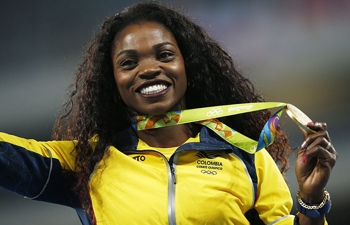

Imagenes
Mujeres Luchadoras
"soy una mujer imperfecta,pero soy autentica y eso es mejor


"Lo más revolucionario que una persona puede hacer es decir siempre en voz alta lo que realmente está ocurriendo"
"soy una mujer imperfecta,pero soy autentica y eso es mejor
"El poder femenino no esta en nuestras piernas,esta en nuestro celebro.."
El 8 de marzo se conmemora el papel de la mujer en búsqueda de la igualdad, y la lucha por los derechos. Su origen se debe a un hecho que marcó la historia de la mujer en el
Desde que en 1977 la ONU proclamó el “Día Internacional de la Mujer”, cada 8 de marzo, fecha en la que se conmemora la lucha de la mujer trabajadora, aquellas que día a día trabajan por la igualdad con el hombre, tanto en la sociedad como en el desarrollo personal. Pero, ¿por qué un 8 de marzo?, el porqué se remonta a la historia.
Siglos enteros de civilización, guerras, hambrunas y epidemias, el nacimiento de las ciudades o la vida campesina bajo el feudalismo se han contado sin incluir a las mujeres: la historia de los varones era extensiva a la historia de la humanidad. Las mujeres podrían considerarse como las grandes olvidadas de la historia
Las mujeres han estado aparentemente ausentes en muchos ámbitos de la ciencia y de la cultura a lo largo de la Historia. Aparecen escasamente en la Historia, en la Literatura, en el Arte, en la Ciencia... Por un lado, porque han tenido muchos obstáculos para poder desarrollar sus intereses y capacidades, y por otro lado, porque a las que han conseguido hacerlo no se les ha reconocido y ni siquiera han sido nombradas en los libros o en las enciclopedias.
Mujer el mundo está amueblado por tus ojos
Se hace más alto el cielo en tu presencia
La tierra se prolonga de rosa en rosa
Y el aire se prolonga de paloma en palo
Al irte dejas una estrella en tu sitio
Dejas caer tus luces como el barco que pasa
Mientras te sigue mi canto embrujado
Como una serpiente fiel y melancólica
Y tú vuelves la cabeza detrás de algún astro
¿Qué combate se libra en el espacio?
Esas lanzas de luz entre planetas
Reflejo de armaduras despiadadas
¿Qué estrella sanguinaria no quiere ceder el paso?
En dónde estás triste noctámbula
Dadora de infinito
Que pasea en el bosque de los sueños
Heme aquí perdido entre mares desiertos
Solo como la pluma que se cae de un pájaro en la noche
Heme aquí en una torre de frío
Abrigado del recuerdo de tus labios marítimos
Del recuerdo de tus complacencias y de tu cabellera
Luminosa y desatada como los ríos de montaña
¿Irías a ser ciega que Dios te dio esas manos?
Te pregunto otra vez
El arco de tus cejas tendido para las armas de los ojos
En la ofensiva alada vencedora segura con orgullos de flor
Te hablan por mí las piedras aporreadas
Te hablan por mí las olas de pájaros sin cielo
Te habla por mí el color de los paisajes sin viento
Te habla por mí el rebaño de ovejas taciturnas
Dormido en tu memoria
Te habla por mí el arroyo descubierto
La yerba sobreviviente atada a la aventura
Aventura de luz y sangre de horizonte
Sin más abrigo que una flor que se apaga
¡Subes centelleante de labio y de ojeras¡
Por tus venas subo, como un can herido
que busca el refugio de blandas aceras.
¡Amor, en el mundo tú eres un pecado!
Mi beso en la punta chispeante del cuerno
del diablo; ¡mi beso que es credo Sagrado¡
Espíritu en el horópter que pasa
¡puro en su blasfemia!
¡el corazón que engendra al cerebro!
que pasa hacia el tuyo, por mi barro triste.
¡Platónico estambre
que existe en el cáliz donde tu alma existe!
¿Algún penitente silencio siniestro?
¿Tú acaso lo escuchas? ¡Inocente flor!
…Y saber que donde no hay un Padrenuestro,
el Amor es un Cristo Pecador!

Pintora italiana del Barroco Artemisia aprende el oficio en el taller de su padre, Orazio Gentileschi. Pintora de la escuela de Caravaggio, con un claroscuro más acenturado y dramático, es apreciada entre los grandes artistas de su época por sus retratos y escenas con heroínas bíblicas. Se convierte en pintora de la corte y es la primera mujer en ingresar en la Accademia del Disegno de Florencia.

Pintora y grabadora impresionista estadounidense Cassat es sobretodo conocida por sus series de pinturas y grabados con madres y niños, aunque también explora otros aspectos de la vida social y privada de las mujeres. En contra de los deseos de su familia marcha a estudiar a Francia donde Edgar Degas se convirte en su mentor. De Degas aprende la técnica del grabado y el dominio de los pasteles. Exhibie con los impresionistas franceses y a su vuelta en Estados Unidos utiliza sus contactos para introducirlos a mecenas norteamericanos.